August 2026 desktop forecast — what the summer miss was made of
Firefox Desktop · legacy telemetry · published curves
How far was August canonical from the summer that actually happened?
28-day trailing mean · scored 2026-08-02 → 2026-08-23 (22 days) · Windows 10 headwind applied
The finding
August canonical forecasts from a 2026-08-02 seam, and by 2026-08-23 it sits 695,352 below actuals on the year-comparable ex-Iran/ex-China track (778,734 all countries). Roughly 41% of that is a summer nobody could have forecast; the other 59% is the forecast sitting below what an ordinary summer would have delivered.
But "illegitimate" bundles two things with different owners, so the useful split is three ways. All of it is one identity, not a model:
C−A = (C−B) + (B−Ano win10) + (Ano win10−A)
shallow summer + the model ran low
+ the headwind we chose
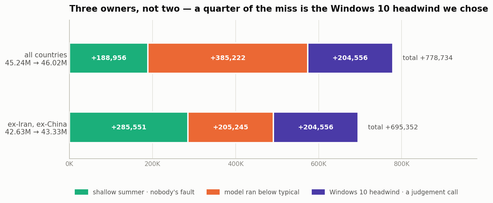
| track | A · forecast | B · typical | C · actual | total miss | shallow summer | model miss | Win10 headwind | headwind share |
|---|---|---|---|---|---|---|---|---|
| ex-Iran, ex-China | 42,630,845 | 43,040,646 | 43,326,197 | +695,352 | +285,551 | +205,245 | +204,556 | 29.4% |
| all countries | 45,244,522 | 45,834,300 | 46,023,256 | +778,734 | +188,956 | +385,222 | +204,556 | 26.3% |
All values are 28-day trailing-mean DAU at 2026-08-23. The forecast column is the published curve with the Windows 10 headwind applied; removing it gives 42,835,401 ex-IR/CN and 45,449,078 all countries.
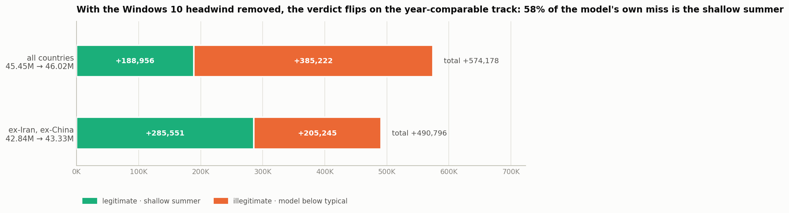
What each adjustment contributes
Four adjustment codes touch an August curve. Only one of them is both non-zero on desktop and separable from the model, which is why the decomposition above has exactly one adjustment term.
| code | what it is | on desktop at 2026-08-23 | separable? |
|---|---|---|---|
h | Windows 10 migration headwind | -204,556 | Yes — display-layer, applied to the 28-day MA after mozaic, so
published − ramp is exact |
t | mobile tailwind | 0 | N/A — its spec sets desktop_dau: 0; it contributes exactly nothing here |
l | launch-on-login | 200,000 add-back (188,226 ex-IR/CN) | No — baked into the parquet |
o | MozillaOnline migration | 646,408 add-back (46,735 ex-IR/CN) | No — baked into the parquet |
The Windows 10 headwind is a linear ramp: zero at the seam, -1,315,000 at 2026-12-15, so only 15.6% of it had arrived by 2026-08-23. Its full Dec-15 weight is more than six times what shows up in this window.
l and o cannot be removed here, and
their add-back levels are not a counterfactual. Both are per-tile bidirectional
overlays: the curve is subtracted from training rows before mozaic and added back after. Change
the subtraction and Prophet's fit changes too, so the realised effect is config-dependent and is
not a level shift — the figures above are an order of magnitude in play, nothing more.
Producing a real l- or o-free counterfactual means re-running a locked
build, which this cluster does not do. Note the ex-IR/CN column already strips ~93% of
o by construction, which is one reason the two tracks disagree.The three series
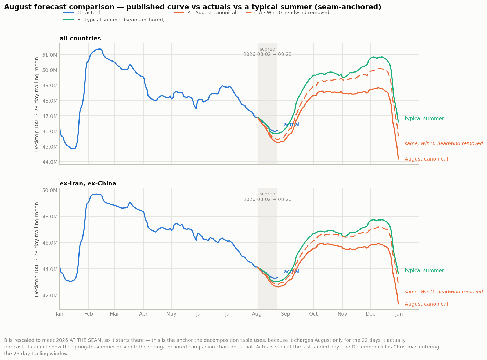
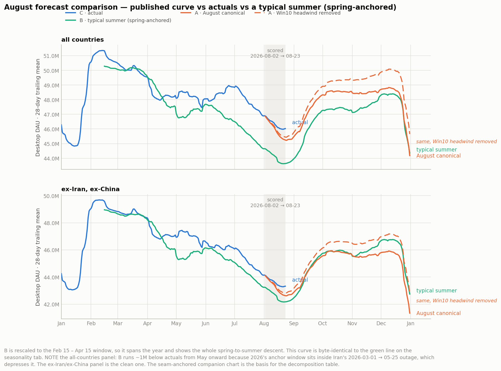
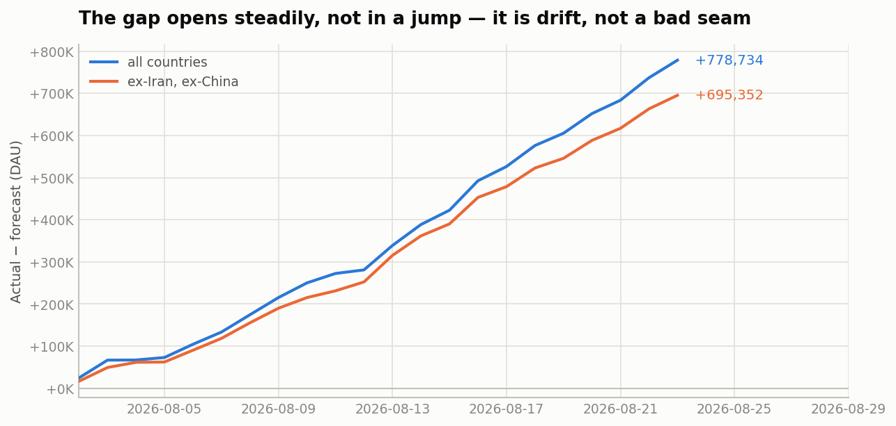
The split
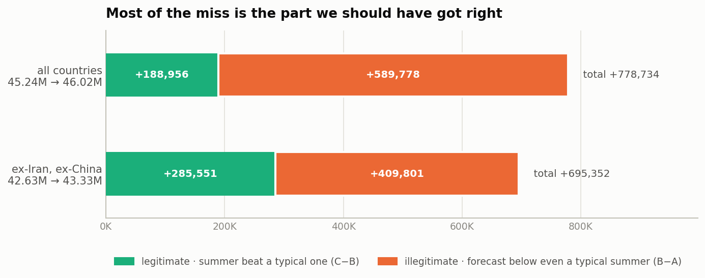
| anchor | A · forecast | B · typical | C · actual | miss C−A | legit C−B | illegit B−A |
|---|---|---|---|---|---|---|
| ex-Iran, ex-China | ||||||
| seam | 42,630,845 | 43,040,646 | 43,326,197 | +695,352 | +285,551 | +409,801 |
| jun15 | 42,630,845 | 42,665,451 | 43,326,197 | +695,352 | +660,746 | +34,606 |
| spring | 42,630,845 | 42,173,958 | 43,326,197 | +695,352 | +1,152,239 | -456,887 |
| all countries | ||||||
| seam | 45,244,522 | 45,834,300 | 46,023,256 | +778,734 | +188,956 | +589,778 |
| jun15 | 45,244,522 | 44,798,535 | 46,023,256 | +778,734 | +1,224,721 | -445,987 |
| spring | 45,244,522 | 43,639,850 | 46,023,256 | +778,734 | +2,383,406 | -1,604,672 |
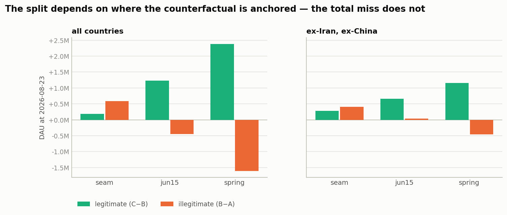
Why three anchors
- seam — B meets actuals at 2026-08-02. Judges the August vintage on the 22 days it actually forecast. This is the headline.
- jun15 — pre-summer and clear of Iran's outage. Answers the whole-season
question: across the summer, actuals beat a typical shape by +660,746
ex-IR/CN, of which +133,673 is
o+lgrowth history never had, leaving roughly +527,073 of genuine seasonal excess. - spring — the Feb-15→Apr-15 anchor. On the all-countries track this window sits inside Iran's 2026-03-01→05-25 outage, which depresses the 2026 anchor and inflates C−B by well over a million DAU. Reported for completeness; do not quote it on the all-countries track.
o (MozillaOnline) and l (launch-on-login) had already plateaued
by 2026-08-02, so their combined growth across the scored window is only
+5,330 ex-IR/CN. The headline legitimate figure is seasonality, not migration.Was the summer really shallow? The trend check
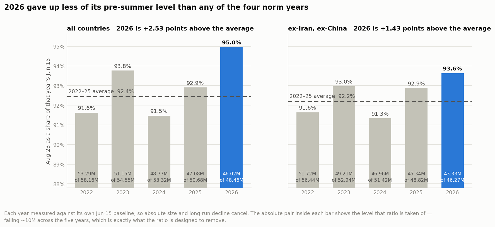
2026 held 93.63% of its Jun-15 level at Aug-23, against a 2022–25 average of 92.20% — outside the norm range of 91.34%–92.96%, at z = +1.70. As reported the gap is wider (94.97% vs 92.44%, z = +2.31), and the difference between the two tracks is largely the China migration.
The baseline YoY column is the intuition check on trend: 2026's Jun-15 baseline is -5.22% year-on-year ex-IR/CN, well inside the -6.20%–-2.87% range the norm years span. 2026's underlying trend is not unusual — what is unusual is the shape of its summer.
ex-Iran, ex-China
| year | Jun-15 baseline | Aug-23 | Aug-23 / baseline | trough | trough date | trough / baseline | baseline YoY |
|---|---|---|---|---|---|---|---|
| 2022 | 56,435,344 | 51,715,047 | 91.64% | 51,621,603 | 2022-08-19 | 91.47% | |
| 2023 | 52,935,923 | 49,211,190 | 92.96% | 49,206,471 | 2023-08-24 | 92.95% | -6.20% |
| 2024 | 51,417,592 | 46,962,669 | 91.34% | 46,945,206 | 2024-08-21 | 91.30% | -2.87% |
| 2025 | 48,820,295 | 45,342,973 | 92.88% | 45,336,116 | 2025-08-27 | 92.86% | -5.05% |
| 2026 | 46,273,296 | 43,326,197 | 93.63% | 43,288,225 | 2026-08-21 | 93.55% | -5.22% |
As reported
| year | Jun-15 baseline | Aug-23 | Aug-23 / baseline | trough | trough date | trough / baseline | baseline YoY |
|---|---|---|---|---|---|---|---|
| 2022 | 58,157,408 | 53,286,433 | 91.62% | 53,189,856 | 2022-08-19 | 91.46% | |
| 2023 | 54,550,021 | 51,149,556 | 93.77% | 51,132,644 | 2023-08-22 | 93.74% | -6.20% |
| 2024 | 53,315,114 | 48,765,672 | 91.47% | 48,748,470 | 2024-08-21 | 91.43% | -2.26% |
| 2025 | 50,676,290 | 47,078,699 | 92.90% | 47,055,549 | 2025-08-25 | 92.86% | -4.95% |
| 2026 | 48,462,473 | 46,023,256 | 94.97% | 45,980,567 | 2026-08-21 | 94.88% | -4.37% |
The vintage ladder
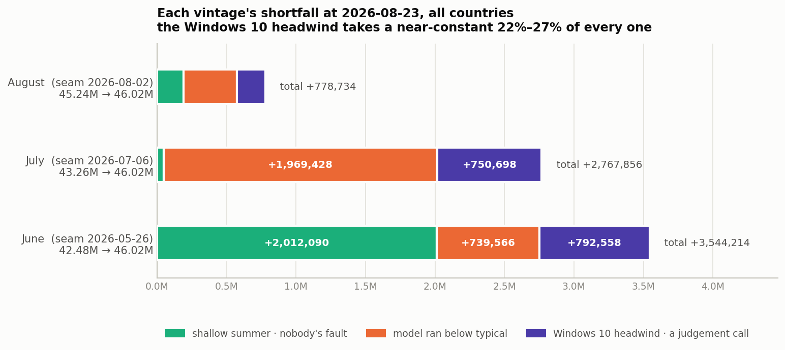
| vintage | seam | A · forecast | C · actual | total miss | shallow summer | model miss | Win10 headwind | headwind share |
|---|---|---|---|---|---|---|---|---|
| August | 2026-08-02 | 45,244,522 | 46,023,256 | +778,734 | +188,956 | +385,222 | +204,556 | 26.3% |
| July | 2026-07-06 | 43,255,400 | 46,023,256 | +2,767,856 | +47,730 | +1,969,428 | +750,698 | 27.1% |
| June | 2026-05-26 | 42,479,042 | 46,023,256 | +3,544,214 | +2,012,090 | +739,566 | +792,558 | 22.4% |
July has the worst model, and June has the best. June's total is the largest of the three, but 56.8% of it is a summer that genuinely beat the typical shape measured from late May, and its model term (+739,566) is the smallest of any vintage. July is the opposite: from a 2026-07-06 seam actuals tracked a typical seasonal shape to within +47,730 DAU, and its model still finished +1,969,428 below it — nearly 2.7× August's. Reading only the totals would have blamed the wrong vintage.
The Windows 10 headwind's share is strikingly stable at 22.4%–27.1% across all three, even though their ramp conventions differ a lot: June and July anchor their ramps at 2026-04-01 so they carry 792,558 and 750,698 of drag by 2026-08-23, against August's 204,556 off a seam-anchored ramp. The older vintages are dragged much harder in absolute terms; their totals are simply larger in proportion.
Two caveats on this table. It compares vintages at a fixed date, so longer-horizon vintages have had more time to drift — it is a "where does each published number stand today" view, not a like-for-like accuracy score. And each row's B is anchored at that row's own seam, so the three shallow-summer terms cover different spans and are not comparable to each other; only the split within a row is meaningful.
Diagnostics
The whole scored window is inside the seam splice
display_ma's variance-matched transition runs 27 days, so August's published curve
only becomes byte-identical to a plain rolling(28).mean() from
2026-08-29. Every day we can score falls before that. Over the window the splice puts
the published curve -72,141 below the model's own
moving average at 2026-08-23 (mean -38,481, max absolute
73,542). So about
10.4% of the ex-IR/CN miss is a display
convention rather than a forecast. It is real for anyone reading the published chart, and it
is not a model error.
Japan automation
Named, not netted out: the convention here is to judge the published KPI as published, without bot correction. Japan is 2.34% of desktop DAU over the scored window. The regional-story project measures the Japan automation cohort at −1.84% on Japan's own late-summer level; scaled by Japan's share that is on the order of 19,515 DAU globally — roughly 6.8% of the legitimate component. Small, not zero, and it cuts in the direction of making the summer look less genuinely strong than it does here. India's improvement is separately established as real users.
What this does not rule out
- The trough has not landed. 2026's minimum so far is 2026-08-21, but the four norm years trough between Aug 19 and Aug 27 by calendar day. If actuals fall further over the next week the legitimate component shrinks and the illegitimate share grows. Re-run after 2026-09-01.
- n = 4. B averages four seasonal shapes whose Aug-23 ratios already span 1.63 percentage points ex-IR/CN. A z of +1.70 against four observations is suggestive, not decisive; 2026 could be an ordinary draw from a wider distribution than four years reveal.
ois a stale carry-forward. August's MozillaOnline curve was built from data through late June and deliberately modelled below what July already showed. Under-subtracting migration from training leaves migration signal in the trend, so some of the "shallow summer" on the all-countries track may beobeing conservative rather than seasonality. The ex-IR/CN track largely removes this, which is part of why its legitimate share is smaller.- No country attribution. This is a world-total analysis on two population scopes. Which markets drive the miss is not answered here, and a miss concentrated in one or two markets would have a very different remedy from a broad-based one.
- The counterfactual is conditional, not causal. B says "given where 2026 was at the anchor, here is the average of what four recent years did next." It is not a claim about why any of them did it.
- Mobile is out of scope by decision. Its published curve carries a
discretionary +299,000
ttailwind sized against July's published figure, so a mobile miss would mostly measure that judgement.
Two premises from the inbound handoff that turned out to be wrong
- The forecast is not Glean. The canonical published desktop curve is
legacy_desktop, and the canonical notebook's actuals cell queries the same table and filter as the regional-story pull (telemetry.active_users_aggregates,app_name = "Firefox Desktop", no channel filter). Verified: at 2026-08-02 both give a 28-day mean of 46,890,129 exactly. There is no Glean/Legacy offset to carry. Thegd-Dparquets in the repo root are glean-desktop scratch runs, not the published artifact. - The published curves are already smoothed. They are 28-day trailing means, so this is a smoothed-vs-smoothed comparison throughout — with the splice caveat above.
Did Prophet expect the summer it got?
Firefox Desktop · each seasonal shape rescaled to 2026's Feb 15 – Apr 15 level · 28-day trailing mean · holidays included
The finding
2026's summer trough came in +1,120,867 shallower than the 2022–25 average (ex-IR/CN). That is the thing a forecast had to anticipate.
August's Prophet anticipated part of it. Its seasonal trough sits 719K shallower than history — 64.1% of the way to what happened. It was still 0.40M too deep, but it moved the right way. July's went the wrong way: 1.53M deeper than history, 2.65M deeper than reality.
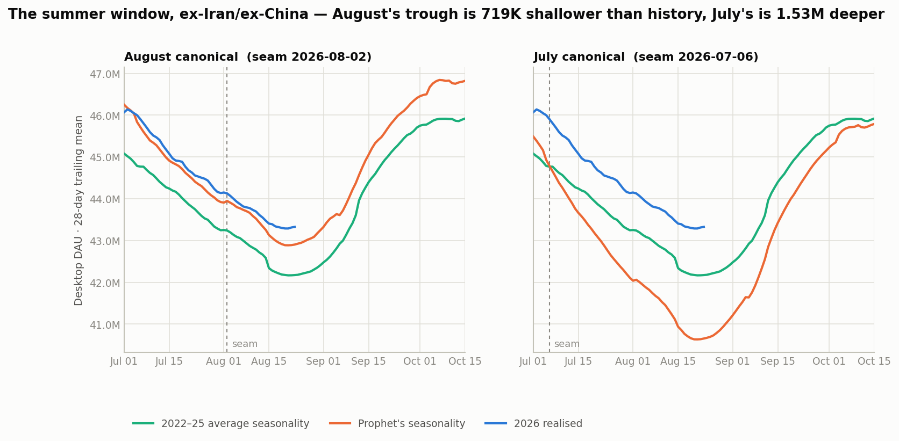
Summer trough, both vintages
| vintage | seam | Prophet | 2022–25 average | 2026 realised | Prophet − history | share of gap closed | pre-reconciliation − history | reconciliation |
|---|---|---|---|---|---|---|---|---|
| ex-Iran, ex-China | ||||||||
| August canonical | 2026-08-02 | 42,886,353 | 42,167,357 | 43,288,225 | +718,996 (shallower) | 64.1% | +530,257 | +188,739 |
| July canonical | 2026-07-06 | 40,635,013 | 42,167,357 | 43,288,225 | -1,532,344 (deeper) | -136.7% | +119,609 | -1,651,953 |
| all countries | ||||||||
| August canonical | 2026-08-02 | 44,214,313 | 43,627,338 | 45,980,567 | +586,975 (shallower) | 24.9% | +809,962 | -222,987 |
| July canonical | 2026-07-06 | 42,097,257 | 43,627,338 | 45,980,567 | -1,530,081 (deeper) | -65.0% | +287,147 | -1,817,228 |
Trough values are absolute DAU, each curve being its own seasonal shape rescaled to 2026's Feb 15 – Apr 15 level — so none of the year-over-year decline in size is in play and vertical distances are real DAU. Troughs are over Aug 1 – Sep 30. On the all-countries track August closed 24.9% of a +2,353,229 gap — but see the Iran caveat below before quoting that row.
The full seasonal year, anchored at spring
Anchoring at spring rather than at a seam is what makes a whole-year view possible, and it is only available because Prophet's seasonality repeats. Measured on the 146 calendar days that appear in both years of August's window: the seasonality-only component drifts by at most 0.59pp between 2026 and 2027. So the 2027 cycle is a sound stand-in for 2026, and the curves below use it.
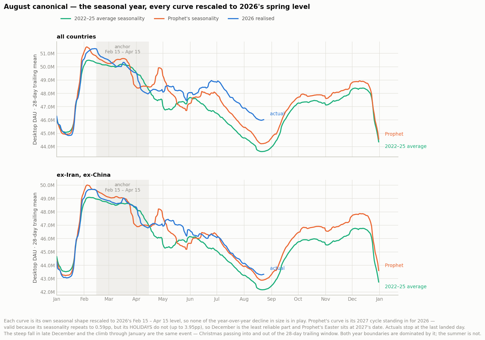
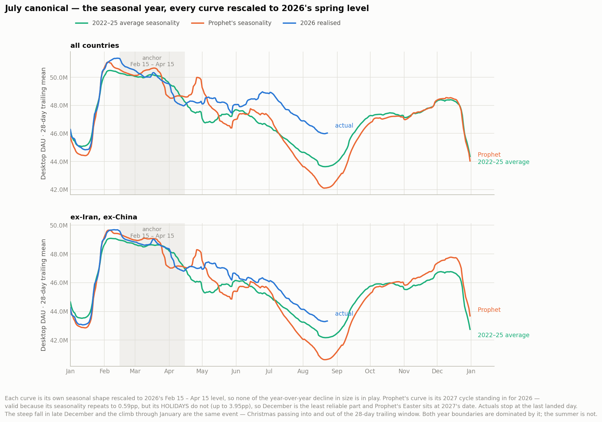
The same question judged from the seam
The spring anchor measures the whole spring-to-summer descent. Anchoring at each vintage's own seam instead measures only the part it was actually forecasting — a shorter span, so smaller numbers, but a stricter test of what the forecast set out to do. Both anchors agree on direction, which is the point of showing them together:
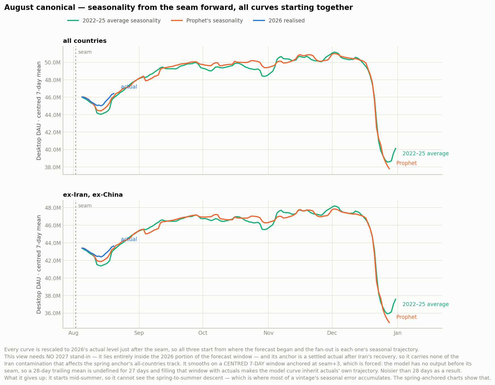
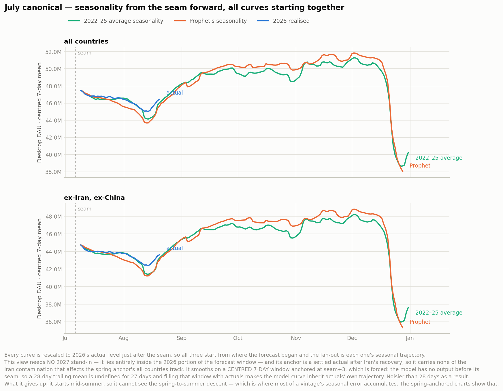
| vintage | anchor | Prophet | 2022–25 average | 2026 realised | Prophet − history | gap to close | share closed |
|---|---|---|---|---|---|---|---|
| ex-Iran, ex-China | |||||||
| August canonical | Feb 15 – Apr 15 | 42,886,353 | 42,167,357 | 43,288,225 | +718,996 (shallower) | +1,120,867 | 64.1% |
| August canonical | seam | 41,860,135 | 41,362,708 | 42,389,950 | +497,427 (shallower) | +1,027,242 | 48.4% |
| July canonical | Feb 15 – Apr 15 | 40,635,013 | 42,167,357 | 43,288,225 | -1,532,344 (deeper) | +1,120,867 | -136.7% |
| July canonical | seam | 41,221,916 | 41,397,785 | 42,389,950 | -175,869 (deeper) | +992,165 | -17.7% |
| all countries | |||||||
| August canonical | Feb 15 – Apr 15 | 44,214,313 | 43,627,338 | 45,980,567 | +586,975 (shallower) | +2,353,229 | 24.9% |
| August canonical | seam | 44,435,274 | 44,040,096 | 45,016,782 | +395,178 (shallower) | +976,686 | 40.5% |
| July canonical | Feb 15 – Apr 15 | 42,097,257 | 43,627,338 | 45,980,567 | -1,530,081 (deeper) | +2,353,229 | -65.0% |
| July canonical | seam | 43,687,923 | 44,136,830 | 45,016,782 | -448,908 (deeper) | +879,952 | -51.0% |
One thing it cannot do on the usual convention. The model has no output before its seam, so a 28-day trailing mean — used everywhere else here — is undefined for its first 27 forecast days. Filling that window with actuals was tried and rejected: the July build's daily level at its seam sits 5.35% below actuals, so a spliced prefix dominates the average for 27 days and the model curve silently inherits actuals' trajectory over exactly the window being measured. It made July's model read 488,729 shallower than history when its own Jul-06 → trough descent is −3,929,823, about 1.5M deeper. These charts therefore use a centred 7-day window anchored at seam+3, which needs no splice at all. Any whole number of weeks cancels the weekly cycle exactly; 7 days is simply noisier than 28.
Most of July's excess depth was added by reconciliation
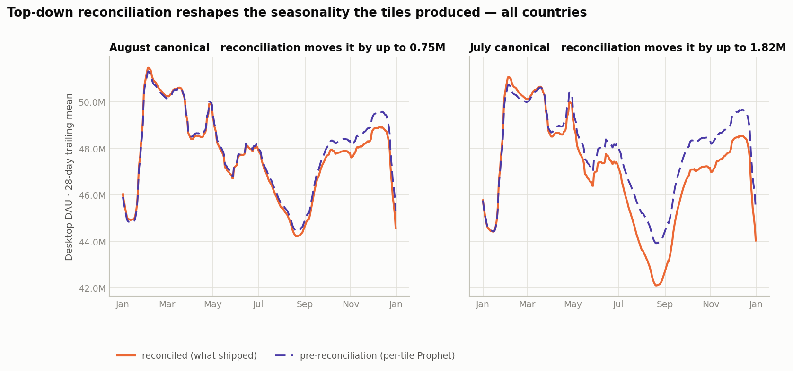
Before reconciliation July's trough is only 120K deeper than history ex-IR/CN. After it, 1.53M. Reconciliation contributes -1,651,953 — most of the excess. August's equivalent is +188,739, in the opposite direction. So the per-tile fits were close in both cycles; the aggregation step is where July's summer got deep. That is consistent with mozaic reconciling top-down, which makes the aggregate its own fit rather than the sum of the tiles. Why it did this to July and not August is not answered here.
Caveats — read these before quoting a number
- Holidays do not repeat, so December is unreliable. The seasonality component drifts 0.59pp year to year, but with holidays included the drift reaches 3.95pp — about 1.86M DAU — concentrated on Dec 21–28, where Christmas's weekday alignment moves. The visible April–May disagreement between Prophet and the other two curves is the same effect: Prophet's Easter sits at 2027's date, not 2026's. The summer is a slow feature and is unaffected.
- The anchor window is saturated with holidays. All 60 of its 60 days carry a holiday effect, mean drag -2.29% of trend (-1,110,767 DAU), worst day -4.9%. Because the anchor is a 60-day mean and Easter falls inside the window in both years, a date shift largely cancels — the residual instability is roughly ±0.5pp on the anchor, about 5% of the 11pp peak-to-trough signal.
- The all-countries anchor is inside Iran's outage. Iran's shutdown runs 2026-03-01 → 2026-05-25, straight through the 2026 Feb 15 – Apr 15 reference window, which depresses the all-countries reference level (49,806,471 DAU) and inflates every deviation measured from it. The ex-IR/CN track (48,411,333 DAU) is clean and is the one to quote.
- All three curves carry trend, deliberately. Each is divided by its own spring level, which removes size but leaves that year's within-year decline inside the shape. Making the model the only trend-free curve would have introduced roughly 1M DAU of asymmetry over the five months from anchor to trough at a −5%/yr decline — comparable to the effect being measured. The cost is that Prophet's curve borrows 2027's trend slope as a stand-in for 2026's; the two rates are close, but it is an approximation.
- Both year boundaries are Christmas, not seasonality you should read. The steep fall in late December and the climb through January are the same event moving into and out of the 28-day trailing window. The summer trough is a slow feature and is unaffected.
- Four norm years is a thin average. At the summer trough the four years' rebased ratios span 1.3 percentage points, giving a standard error of roughly ±128,000 DAU on the history curve. August's +718,996 is several times that; July's -1,532,344 is far outside it. At year end the spread is ~4× wider, another reason not to read December closely.
- Only two vintages. Whether July's reconciliation behaviour recurs is not answerable from n = 2. June's pickle is in the GCS archive if this is worth extending.
How the model's seasonality was recovered
The pickles do not store fitted Prophet objects —
tile.forecast_model is the factory closure, so there is no
predict_seasonal_components() to call. Each of the 48 tiles keeps a trend, a
reconciled forecast (1,000 posterior samples) and a holiday-impact series applied on top, which
is enough to rebuild the decomposition. Verified against the published parquet:
parquet = Σ reconciled + Σ holidays +
(launch-on-login + MozillaOnline)
The overlay residual is smooth and level — +763,385 on August (std 62,932) and +694,627 on July (std 70,492) — consistent with July's 125K launch-on-login ceiling against August's 200K.
July's pickle is the published fit, not a re-fit. July's
desktop_locked/ shipped no pickle. The file used is a parameter-scan run at July's
seam whose reconciled forecast reproduces July's published parquet to 0 DAU across all
198,696 rows; that check re-runs at build time. The two builds also store their trend
in different spaces — August in log DAU, July in level DAU, a package version difference — which
the code detects per tile rather than assuming.